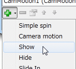
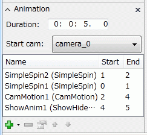
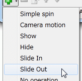
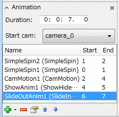

Anim ShowHide
表示・非表示切り替えのアニメーション¶
このセクションでは，Rendererの表示・非表示切り替えのアニメーションについて， 例を挙げながら説明します． （例で説明している作業は，前セクションの続きの操作として説明しています）
表示・非表示切り替えには，
- Show/Hide (fade in/out)
- Slide in/out
の二種類があります．
このセクションで最終的に出来上がるqscシーンファイルが，以下からダウンロードできます．
Show/Hideアニメーション¶
Show/Hideアニメーションは，Rendererが半透明になりながら徐々に表示・非表示になるアニメーションです． オプションとして，半透明にならず突然表示・非表示が切り替わるようにもできます．
準備¶
まず，表示・非表示を行う対象となるrendererを作成します．
この例では，LysozymeのGlu35とAsp52残基(A.35,52.*)をballstick表示するレンダラー"ballstick1"を作成しています． (詳しいやり方はチュートリアル・レンダラーの追加と削除等を参照してください)
Show/Hideアニメーションの追加¶
Rendere作成後，アニメーションパネルの追加「＋」ボタンを押します．

- Showがfade in
- Hideがfade out
に対応しています．例では，Showを選んでください．
Fade in/outアニメーションの設定¶
アニメーションを追加すると，以下のような設定ダイアログが表示されます．
{kind=link}
Common settingsの部分は，SimpleSpin等他のアニメーションと共通の設定項目です．
Show/Hide settingsの部分は，Show/Hideアニメーションに特有の設定です．
- Target renderers
- 表示非表示を制御する対象のrendererを選択します．複数選択が可能．
右の「＋」ボタンで追加できる．また，項目を選んで右の「−」ボタンを押すと削除できる． - Show/Hide
- 表示するか，非表示にするかの選択が可能．（Hideするつもりが，誤ってShowを選んでしまったとしても，ここでHideに切り替えることができる）
- Fade
- チェックを外すと，半透明にならず突然表示・非表示が切り替わる．
この例では，以下のように設定を変更しています．
- NameはShowAnim1のまま(defaultでそのようになっているはず．なっていない場合はそのように設定)
- Start timeは0:0:4.0(defaultでそのようになっているはず．なっていない場合はそのように設定)
- Durationは0:0:1.0のままで
- Target renderersにballstick1を追加
変更の確認と再生¶
設定ダイアログでOKを押して，ダイアログを閉じると，アニメーションパネルは以下のようになります．

最後尾の4〜5秒に，ShowAnim1が追加されたことがわかります．
さらに，Animationリボンを選択し再生ボタンを押すと，アニメーションを実行してみることができます． 回転・拡大後，Asp, Glu残基が徐々に表示されることが解ります．
注意：以上のような半透明アニメーションは，OpenGLがshaderに対応していない場合， 表示が非常に遅くなってしまいます．対応しているかどうかは，起動時にログ画面に出てくるOpenGL Infoという部分を見てください．GLSLとそのバージョンが表示されないようだと，shaderには対応していないということになります．（古いビデオカードやremote desktop経由でCueMolを使用した場合に対応していない場合があります）
Slide In/Outアニメーション¶
Slide In/Outアニメーションは，Rendererが画面外から移動してきて表示される，あるいは画面外に移動し非表示になるアニメーションです．
注意: Version 2.1.0.241にはバグがあるため，slide in/outアニメーションがあるシーンの再生・編集を繰り返すと対象rendererが正しく表示されなくなることがあります．そのような場合は，シーンをいったん保存し，CueMolを再起動させ，再度読み込むと正常にアニメーションが表示されるようになります．
Show/Hideアニメーションの追加¶
Rendere作成後，アニメーションパネルの追加「＋」ボタンを押します．

例では，Slide outを選んでください．
Slide in/outアニメーションの設定¶
アニメーションを追加すると，以下のような設定ダイアログが表示されます．
{kind=link}
Common settingsの部分は，SimpleSpin等他のアニメーションと共通の設定項目です．
Slide in/out settingsの部分は，Slide in/outアニメーションに特有の設定です．
- Target renderers
- 表示非表示を制御する対象のrendererを選択します．(Show/Hideの場合と同様)
- Direction angle
- Slideしてくる向きを指定．角度は，画面を中心とし時計の９時の方向を０度として，時計回りで角度を指定する．右にあるドロップダウン・リストで簡易に方向から角度を入力できる．
- Distance
- Slideする距離を指定する．距離の単位は，W/2 (画面幅の半分）を１として指定．デフォルトでは1.0になっており，これは中央にある物体が画面外に完全に消える（あるいは画面外から中央に入ってくる）のに十分な距離である．ただし，ウィンドウを異常に縦長（あるいは横長）にしていた場合，画面から消えない場合もありうるので，適宜値を調節する必要がある．
- Show/Hide
- 表示(slide in)するか，非表示(slide out)にするかの選択が可能．
この例では，以下のように設定を変更しています．
- NameはSlideOutAnim1のまま(defaultでそのようになっているはず．なっていない場合はそのように設定)
- Start timeは0:0:6.0(defaultで0:0:5.0になっているが，上記で設定したfade inの終了から１秒間を開けている．）
- Durationは0:0:1.0のままで
- Quadricは50%にする．
- Target renderersにballstick1を追加
- Direction angleは90度（Up)にする
- Distanceは1.0のまま
変更の確認¶
設定ダイアログでOKを押して，ダイアログを閉じると，アニメーションパネルは以下のようになります．

このパネルの表示の意味は以下のようになります．
- アニメーションは全長で7秒間 (Durationが0:0:7.0)
- アニメーションはcamera_0から開始
- 0〜1秒間，SimpleSpin1により360度回転
- 1〜2秒間，SimpleSpin2により-360度回転
- 2〜4秒間，CamMotion1により，視点がcamera_1に移動する
- 4〜5秒間，ShowAnim1により，ballstick1が表示
- 5〜6秒間，静止状態
- 6〜7秒間，SlideOutAnim1により，ballstick1が非表示になる
(以上で作成したシーンは， lyso_showhide1.qscからダウンロードできます)
アニメーションの再生¶
Animation ribbonの再生ボタンを押すと，上記で作成したアニメーションが再生されます． 以下のyoutube動画のようになるはずです．